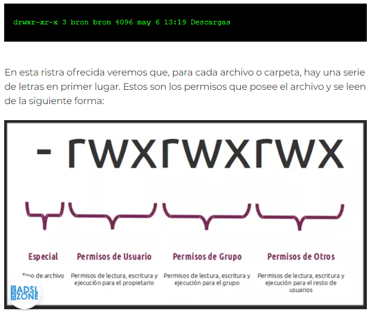
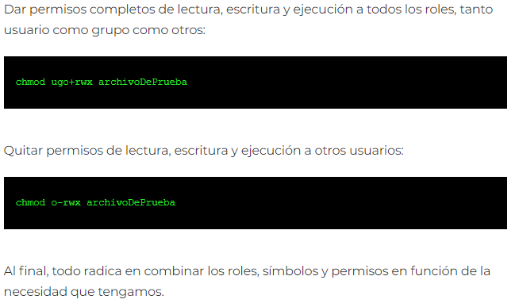
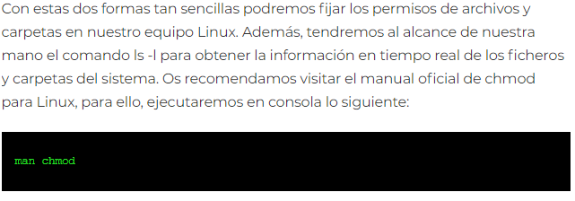
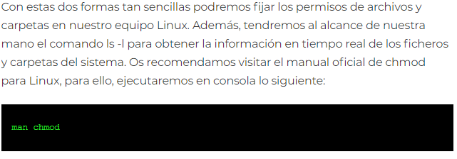
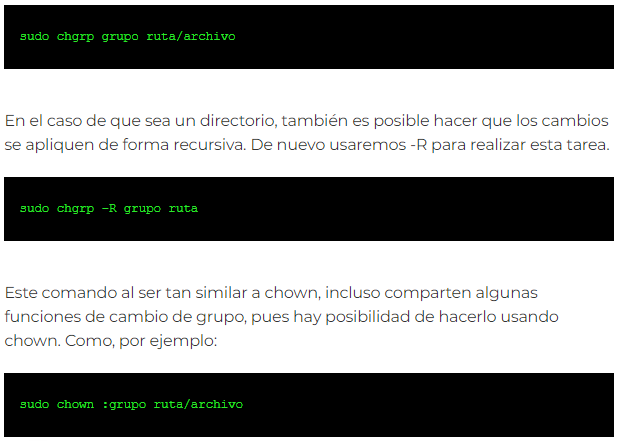

Con esto ya tenemos nuestro sistema preparado para empezar con las pruebas de cambios de permisos.
Este comando ofrece la siguiente información (en orden de izquierda a derecha):
Una vez que ya hemos creado la carpeta y archivos, así como hemos visto la salida del comando «ls -l», vamos a interpretar los permisos que tienen los ficheros o carpetas.
Anteriormente habéis visto que los diferentes archivos tienen estos permisos:
En el anterior ejemplo, tenemos los permisos «drwxr-xr-x», esto significa lo siguiente:
El comando que debemos utilizar para realizar esta tarea es chmod, esta será la herramienta con el que podremos añadir o quitar permisos, tanto a un archivo como a una carpeta existente en el sistema de fichero de nuestro sistema operativo. Para realizar esta configuración con chmod, podremos realizarlo de dos formas diferentes, utilizando letras que es más «humano» pero más largo, y también números en formato «octal», que es mucho más rápido. Esta última forma es nuestra favorita por la rapidez, aunque, es posible que en un primer momento te guste más utilizar letras, porque se entiende mucho mejor.
Los sistemas de archivos de Unix, servidores Linux, cada archivo cuenta con sus permisos los cuales se regulan en base a tres clases:
En este modo se asignan letras a todas las clases de usuarios y a todos los permisos de accesos posibles. Si se combinan, estos pueden definirse de forma sencilla en cuanto a los permisos que otorgar o retirar, y a que usuarios. Si vas a utilizar letras para añadir o quitar permisos de una carpeta o archivo, debemos tener en cuenta los roles, símbolos y los permisos. Existen tres tipos de roles:
Dos tipos de símbolos, que usaremos si la asignación de los permisos se realiza en modo simbólico, para vincular estos a los usuarios se usarán los siguientes símbolos.
Tres tipos de permisosque podemos asignar a los usuarios.
A continuación, os ofrecemos una serie de ejemplos para que veáis de qué estamos hablando:
El comando chmod también es compatible con otra nomenclatura que os vamos a enseñar y que está basada en octal. Imaginad que los permisos del propietario (r w x) están identificados por 0 y 1. Es decir, si por ejemplo queremos dar permisos de lectura y escritura solamente (y no permisos de ejecución) sería: 110. Si queremos solo el permiso de lectura sería: 100.
Por lo tanto, teniendo en cuenta todas las posibilidades existentes obtenemos los siguientes valores:
Es decir, esto es algo extrapolable tanto al usuario, grupo como a otros.
 

Independientemente de si usamos la notación simbólica o la octal, los usuarios tendrán a su disposición una amplia lista de opciones en lo que se refiere a la asignación de los derechos de acceso a los archivos y diferentes directorios. Estos se insertan en la línea de comandos entre el comandó en sí y los permisos o modos. Estas opciones pueden ser:

Además de la anterior opción chmod para Linux, hay otras dos opciones más que están disponibles. Estos comandos que verás a continuación cumplen otras funciones. Por lo que también tendrás disponible una explicación clara de qué son y, sobre todo, ejemplos para que puedas ponerlos en práctica.
Como has podido ver, los archivos o directorios de Linux tienen un propietario asignado, y para cambiar esto está el comando chown. Este se trata de una abreviatura de «change owner» (Cambiar de propietario). Esta se encuentra disponible con varias utilidades para los superusuarios, de forma que se puede cambiar la propiedad del contenido que se encuentre en el equipo o sistema.
Además, en el momento de comprobar que el cambio de propiedad se ha realizado correctamente, se puede usar el comando ls -l. Además de que el propio comando se puede modificar para cambiar la propiedad y el grupo. Al igual que hay que tener en cuenta que no solo se puede dar uso a este comando para archivos, también para directorios, tanto para modificar únicamente el propietario en sí como el grupo o ambos. Y no hay que olvidar que esta opción se puede utilizar para enlaces simbólicos o blandos. Por lo que las alternativas que ofrece son variadas.
Este comando es similar a chown, pero nos permite realizar el cambio de grupo propietario, lo cual también podemos hacer con chown, como veremos más adelante. Es decir, en vez de cambiar los permisos, este comando permite modificar por nuestra cuenta el propietario o el grupo al que pertenece cualquiera de esto. Aunque, al igual que ocurre con el anterior, si realizamos el cambio de grupo propietario de un archivo o fichero, el usuario propietario no cambiar
Para poner a prueba esto mismo, ten en cuenta que esto se puede realizar de la siguiente forma:
Por otro lado, también se puede modificar el grupo de un archivo o directorio al usar el comando "chgrp groupname archivo". Ten en cuenta que "groupname" se tiene que cambiar por el nombre que se quiera añadir y "archivo" por el que tiene el fichero o directorio en cuestión.
Además de las anteriores opciones, lo cierto es que este comando tiene otra serie de funciones avanzadas que se pueden aprovechar como es el caso de:
Por tanto, queda claro que este comando en particular de Linux ofrece diferentes alternativas con las que es posible modificar cuando sea necesario el grupo de un directorio o archivo. Y es que, tanto a través de su sintaxis básica como de las opciones más avanzadas, se ofrece al usuario una herramienta realmente útil para que se pueda tener un mayor control sobre los permisos de acceso.